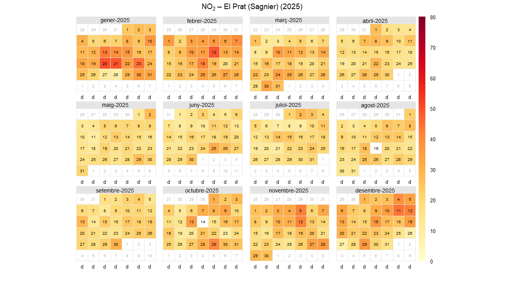
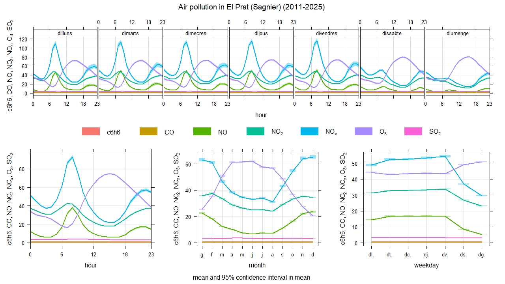
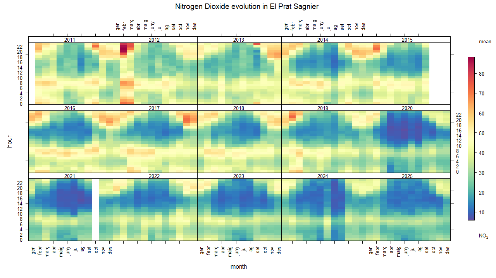
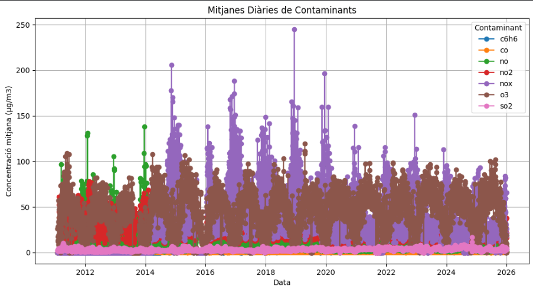
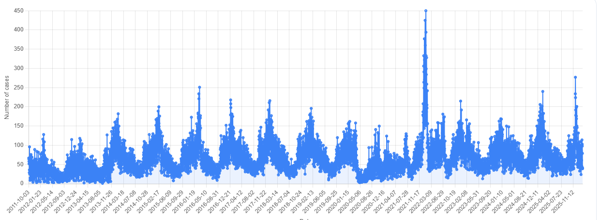

Air pollution, conditions and respiratory infecctions in El prat(sagnier) a 14-year spationtemporal analysis
the objectives of this research project are:
- Ibrahim,achraf & ilyas are studyng all data from El prat (sagnier) that is a city located in Baix llobregat county in this county we are using data from Air Pollution Prevention and Monitoring Network(XPVCA in catalan) corresponding to hourly data of air pollutants from year 2001 to 2025. Data inclided :benzene(c6h6), nitrogen oxid (NO), nitrogen dioxide(NO2),ozone(03), particulate matter of less 10 µg;g/m3(PM/),particulate matter of less than 2.5 µg/m3(PM2.5) and sulphur dioxide (SO2)
- Meteorological data is available from Meteocat Meteocat XEMA(Meteorological data server of Catalonia ) so we choose the same metorological station that is in sagnier . The data structure is based on semi-hourly data that is data every 30 minutes from 2011. Data included temperature relative humidity ,pressure wild direction , wild speed , solar irradiance.
- Respiratory Infection data are collected from Catalonia Information System for Infection Surveillance (SIVIC) using data from region 75, that is Barcelona Metropolitan South Region, and 182 is the identificator of the Primary care center from El Prat (Sagnier).
- Yellow/Light Tones: These represent clean air. These days are usually windy or rainy, which helps clear the sky.
- Orange/Red Tones: these represent higher pollution. The darker the red, the more pollutants were in the air. On these days, people with breathing difficulties might feel more tired or uncomfortable.
- Took at January and February. You will see many dark orange and red squares. In winter, the ground is cold, and a layer of heavy air sits on top of the city.
- Look at August. Most of the squares are light yellow. This is because many people leave the city for vacation, so there are fewer cars. Also, the summer heat creates currents that push pollution high up into the sky and away from us.
- If you look closely at the rows, most of the weekends are often lighter than the weekdays. This shows that when schools and offices are closed, the air improves almost immediately.
- 8:00 AM: When people drive to work or drop children off at school.
- 8:00 PM: When people return home.
- Vertical Axis: This shows the hours of the day (0 to 24).
- Horizontal Axis: This shows the months (January to December).
- Colors: Dark red and orange mean "High Pollution." Blue and green mean "Clean Ai.
- A Cleaner Decade: Look at the top rows (2011–2014). You will see large blocks of dark orange and red, especially during the morning and evening hours. This was a period of high pollution.
- The Shift to Blue: Look at the bottom rows (2023–2025). The red areas are much smaller and lighter. There is a lot more blue and green across the whole year. This visual change proves that new technology, electric vehicles, and environmental rules in El Prat are working.
- Even in the most recent years, you can still see yellow and orange stripes at the top and bottom of the daily cycle (8:00 AM and 8:00 PM). This reminds us that while the air is better, the "rush hour" traffic is still the biggest challenge we face.
- You may notice some completely white squares in the graphic. These are not zero pollution days. Instead, they represent moments when the measuring station stopped working. Like any machine, sensors can fail due to power cuts, maintenance, or extreme weather, leaving a gap in the data.
- The purple line (NOx - Nitrogen Oxides): Is the line with the most movement and the one that reaches the highest peaks. These gases come mainly from car exhausts and industrial activity.
- The brown line (O3 - Ozone): It rises in summer and falls in winter. Unlike others, ozone does not come directly from an exhaust, it is formed when other pollutants are exposed to the sun. That's why it always rises when it's hotter.
- The lower lines (SO2, CO, C6H6): substances like carbon monoxide or benzene are very close to zero. This are good news, as it indicates that certain types of industrial and old fuel pollution are under control.
- El Prat (Sagnier): Has never exceeded 200 micrograms per cubic meter.
- According to European regulations, this level can only be exceeded 18 times.
- At El Prat (Sagnier), the level has been between 125 and 200 micrograms per cubic meter only 6 times.
- Does it comply with the law? European law states that in one year the maximum number of times that 200 micrograms per cubic meter of nitrogen dioxide (NO2) can be exceeded is 18. We have observed that it has never reached 200 micrograms per cubic meter, but it has been between 125 and 200 micrograms per cubic meter only 6 times in 14 years.
- In 2025, it recorded 0 hours. In 2012, it exceeded the limit 5 times.
- The pollutant CO has not exceeded the annual limit in any of the 15 years analyzed (0% of the period).
- Total days exceeding the limit: 0
- Total hours exceeding the limit: 0
- The pollutant NO2 has not exceeded the annual limit in any of the 15 years analyzed (0% of the period).
- Total days exceeding the limit: 0
- Total hours exceeding the limit: 0
- The pollutant O3 has not exceeded the annual limit in any of the 15 years analyzed (0% of the period).
- Total days exceeding the limit: 0
- Total hours exceeding the limit: 798
- The pollutant SO2 has not exceeded the annual limit in any of the 15 years analyzed (0% of the period).
- Total days exceeding the limit: 0
- Total hours exceeding the limit: 0
- The most problematic pollutant during the period 2011–2025 has been CO, with 0 years exceeding the annual limit.
- The most critical year of the period was 2011, with 0 pollutants exceeding the annual limit.
- The analysis of air pollution in El Prat (Sagnier) during the period 2011–2025 shows that air quality has presented recurring breaches of European legal limits, especially for pollutants associated with traffic and industrial activities.
- The majority of the medical cases recorded from 2020 onwards are due to COVID-19. This explains the spikes that break the normal rhythm of previous years.
- The impact of these diseases is not the same for everyone. Respiratory illnesses often target a specific age group.
- Children and the Old People: These two groups are the most vulnerable. Children have developing lungs. The old people often have weaker immune systems.
- When analyzing the data by sex, the results are very similar for both men and women.
- The lower lines (SO2, CO, C6H6): substances like carbon monoxide or benzene are very close to zero. This are good news, as it indicates that certain types of industrial and old fuel pollution are under control.
- Overall, the graphics show that nitrogen dioxide (NO2) levels in El Prat (Sagnier) change depending on the time of day, month, and year, with higher concentrations usually appearing during peak activity hours, likely related to traffic and urban activity. In 2025, most days present low or moderate pollution levels, meaning that air quality is generally acceptable, although some days show higher concentrations. In addition, we analyzed health data from the SIVIC system and compared it with the pollution levels. This comparison suggests that air pollution may be related to certain respiratory diseases, since higher pollution periods can coincide with increases in health incidents. That's why, the study indicates that air quality can have an impact on public health, highlighting the importance of monitoring pollution levels and reducing emissions to protect people’s health.
Calendar Plot

The Calendar Plot provides a daily record of air quality throughout the year 2025. Each square represents a specific day, and the color indicates the concentration of NO2
How to read the colors
The Winter Trap
The Summer Break
The Weekend
TimeVariation

Air pollution is not constant, it rises and falls based on our daily routines. The first chart shows that the air follows a "work schedule."
Rush Hour Peaks
There are two times during the day when harmful gases (like NOX, which comes from vehicle exhausts) reach their highest levels
hese blue peaks on the chart represent the "fingerprint" left by our morning and evening commutes.
Monthly Pattern
The Winter Rise: The blue and green lines (traffic gases) are much higher in January and December. During these months, the air is cold and still, which prevents pollution from blowing away.
The Summer Rise: The purple line (Ozone) is highest in July and August. The more sun and heat there is, the more Ozone is produced in the atmosphere.
The Sun and Ozone (O3)
Ozone is a unique pollutant. It does not come directly out of a car. Instead, it is created when sunlight hits other pollutants already in the air. This is why the purple line on the chart rises at midday when the sun is strongest and drops at night.
The Weekend Break
If you compare different days of the week, Sunday is the cleanest day. Because there are fewer delivery trucks and fewer people commuting, the air gets a chance to clear up. This is usually the best time for outdoor activities.
TrendLevel

Trendlevel is a very large table that shows the history of Nitrogen Dioxide (NO2) every single day from 2011 until 2025. This is the best way to see if our city is actually getting cleaner over time.
How to Read the "Heat"
The Improvement
The Constant Problem
The White Squares
Daily Averages

This graphic shows the daily averages of the main air pollutants. Each colored line represents a different substance measured in micrograms per cubic meter.
Pollutants
Overcomings
Sivic

This graphic from SIVIC shows how health issues in El Prat change over time. We can look at specific diseases, age groups, sex...